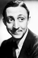
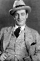

Country:United States, 60 minutes
Spoken languages:English
Genres:Horror, Thriller, Mystery
Director(s):Frank R. Strayer
Writer(s):
Video Codec:Unknown
Number: 102


Certification:NR
Storyline:
Ruth Earlton has come home to her ancestral mansion to claim her inheritance. Accompanied by her boyfriend, she discovers that her father died suddenly under suspicious circumstances. Now it's her turn, as her deranged and relentless uncle targets her for death with the help of his wife and son, plus a very unhappy ape.
Cast:  
Medium: Original DVD,
Comments: Part of: 100 Greatest Horror Classics
Loaned: No
Aspect ratio: Unknown